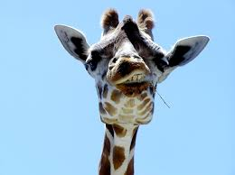

The giraffe is a large African hoofed mammal belonging to the genus Giraffa. It is the tallest living terrestrial animal and the largest ruminant on Earth. Traditionally, giraffes have been thought of as one species, Giraffa camelopardalis, with nine subspecies. Most recently, researchers proposed dividing them into four extant species due to new research into their mitochondrial and nuclear DNA, and individual species can be distinguished by their fur coat patterns. Seven other extinct species of Giraffa are known from the fossil record. The giraffe's distinguishing characteristics are its extremely long neck and legs, horn-like ossicones, and spotted coat patterns. It is classified under the family Giraffidae, along with its closest extant relative, the okapi. Its scattered range extends from Chad in the north to South Africa in the south and from Niger in the west to Somalia in the east. Giraffes usually inhabit savannahs and woodlands. Their food source is leaves, fruits, and flowers of woody plants, primarily acacia species, which they browse at heights most other ground-based herbivores cannot reach.
Table of Contents:
|
|
|
The name "giraffe" has its earliest known origins in the Arabic word zarāfah (زرافة),[2] ultimately from Persian زُرنَاپَا (zurnāpā), a compound of زُرنَا (zurnā, "flute, zurna") and پَا (pā, "leg").[3][4] In early Modern English the spellings jarraf and ziraph were used, probably directly from the Arabic,[5] and in Middle English jarraf and ziraph, gerfauntz. The Italian form giraffa arose in the 1590s. The modern English form developed around 1600 from the French girafe.[2] "Camelopard" /kəˈmɛləˌpɑːrd/ is an archaic English name for the giraffe; it derives from the Ancient Greek καμηλοπάρδαλις (kamēlopárdalis), from κάμηλος (kámēlos), "camel", and πάρδαλις (párdalis), "leopard", referring to its camel-like shape and leopard-like colouration.[6][7]
The giraffe is one of only two living genera of the family Giraffidae in the order Artiodactyla, the other being the okapi.[8] They are ruminants of the clade Pecora, along with Antilocapridae (pronghorns), Cervidae (deer), Bovidae (cattle, antelope, goats and sheep) and Moschidae (musk deer). A 2019 genome study (cladogram below) finds that Giraffidae are a sister taxon to Antilocapridae, with an estimated split of over 20 million years ago.[9]

The family Giraffidae was once much more extensive, with over 10 fossil genera described.[8] The elongation of the neck appears to have started early in the giraffe lineage. Comparisons between giraffes and their ancient relatives suggest vertebrae close to the skull lengthened earlier, followed by lengthening of vertebrae further down.[10] One early giraffid ancestor was Canthumeryx, which has been dated variously to have lived 25 to 20 million years ago, 17–15 mya or 18–14.3 mya and whose deposits have been found in Libya. This animal resembled an antelope and had a medium-sized, lightly built body. Giraffokeryx appeared 15–12 mya on the Indian subcontinent and resembled an okapi or a small giraffe, and had a longer neck and similar ossicones.[8] Giraffokeryx may have shared a clade with more massively built giraffids like Sivatherium and Bramatherium.[10]
The International Union for Conservation of Nature (IUCN) currently recognises only one species of giraffe with nine subspecies.[1] Carl Linnaeus originally classified living giraffes as one species in 1758. He gave it the binomial name Cervus camelopardalis. Mathurin Jacques Brisson coined the generic name Giraffa in 1762.[19] During the 1900s, various taxonomies with two or three species were proposed.[20] A 2007 study on the genetics of giraffes using mitochondrial DNA suggested at least six lineages could be recognised as species.[18] A 2011 study using detailed analyses of the morphology of giraffes, and application of the phylogenetic species concept, described eight species of living giraffes.[21] A 2016 study also concluded that living giraffes consist of multiple species. The researchers suggested the existence of four species, which have not exchanged genetic information between each other for 1 to 2 million years.[22] A 2020 study showed that depending on the method chosen, different taxonomic hypotheses recognizing from two to six species can be considered for the genus Giraffa. That study also found that multi-species coalescent methods can lead to taxonomic over-splitting, as those methods delimit geographic structures rather than species. The three-species hypothesis, which recognises G. camelopardalis, G. giraffa, and G. tippelskirchi, is highly supported by phylogenetic analyses and also corroborated by most population genetic and multi-species coalescent analyses.[23] A 2021 whole genome sequencing study suggests the existence of four distinct species and seven subspecies.[24] A 2024 study found a higher amount of ancient gene flow than expected between populations.[25]
Fully grown giraffes stand 4.3–5.7 m (14–19 ft) tall, with males taller than females.[47] The average weight is 1,192 kg (2,628 lb) for an adult male and 828 kg (1,825 lb) for an adult female.[48] Despite its long neck and legs, its body is relatively short.[49]: 66 The skin is mostly gray[48] or tan,[50] and can reach a thickness of 20 mm (0.79 in).[51]: 87 The 80–100 cm (31–39 in) long[37] tail ends in a long, dark tuft of hair and is used as a defense against insects.[51]: 94
The giraffe has an extremely elongated neck, which can be up to 2.4 m (7 ft 10 in) in length.[62] Along the neck is a mane made of short, erect hairs.[19] The neck typically rests at an angle of 50–60 degrees, though juveniles are closer to 70 degrees.[51]: 72–73 The long neck r esults from a disproportionate lengthening of the cervical vertebrae, not from the addition of more vertebrae. Each cervical vertebra is over 28 cm (11 in) long.[49]: 71 They comprise 52–54 per cent of the length of the giraffe's vertebral column, compared with the 27–33 percent typical of similar large ungulates, including the giraffe's closest living relative, the okapi.[15] This elongation largely takes place after birth, perhaps because giraffe mothers would have a difficult time giving birth to young with the same neck proportions as adults.[63] The giraffe's head and neck are held up by large muscles and a nucha l ligament, which are anchored by long thoracic vertebrae spines, giving them a hump.[19][64][37]
Both sexes have prominent horn-like structures called ossicones, which can reach 13.5 cm (5.3 in). They are formed from ossified cartilage, covered in skin, and fused to the skull at the parietal bones.[44][51]: 95–97 Being vascularised, the ossicones may have a role in thermoregulation,[55] and are used in combat between males.[59] Appearance is a reliable guide to the sex or age of a giraffe: the ossicones of females and young are thin and display tufts of hair on top, whereas those of adult males tend to be bald and knobbed on top.[44] A lump, which is more prominent in males, emerges in the middle of the skull. [19] Males develop calcium deposits that form bumps on their skulls as they age.[52] Multiple sinuses lighten a giraffe's skull.[51]: 103 However, as males age, their skulls become heavier and more club-like, helping them become more dominant in combat.[44] The occipital condyles at the bottom of the skull allow the animal to tip its head over 90 degrees and grab food on the branches directly above them with the tongue.[51]: 103, 110 [19]
links to other students websites: